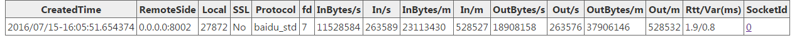
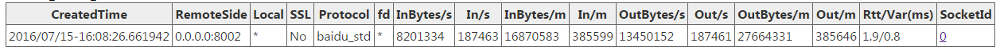
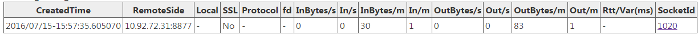

/connections 服务可以查看所有的连接。一个典型的页面如下。
server 端的连接（server_socket_count: 5）：
| CreatedTime | RemoteSide | SSL | Protocol | fd | BytesIn/s | In/s | BytesOut/s | Out/s | BytesIn/m | In/m | BytesOut/m | Out/m | SocketId |
|---|---|---|---|---|---|---|---|---|---|---|---|---|---|
| 2015/09/21-21:32:09.630840 | 172.22.38.217:51379 | No | http | 19 | 1300 | 1 | 269 | 1 | 68844 | 53 | 115860 | 53 | 257 |
| 2015/09/21-21:32:09.630857 | 172.22.38.217:51380 | No | http | 20 | 1308 | 1 | 5766 | 1 | 68884 | 53 | 129978 | 53 | 258 |
| 2015/09/21-21:32:09.630880 | 172.22.38.217:51381 | No | http | 21 | 1292 | 1 | 1447 | 1 | 67672 | 52 | 143414 | 52 | 259 |
| 2015/09/21-21:32:01.324587 | 127.0.0.1:55385 | No | baidu_std | 15 | 1480 | 20 | 880 | 20 | 88020 | 1192 | 52260 | 1192 | 512 |
| 2015/09/21-21:32:01.325969 | 127.0.0.1:55387 | No | baidu_std | 17 | 4016 | 40 | 1554 | 40 | 238879 | 2384 | 92660 | 2384 | 1024 |
channel 端的连接（channel_socket_count: 1）：
| CreatedTime | RemoteSide | SSL | Protocol | fd | BytesIn/s | In/s | BytesOut/s | Out/s | BytesIn/m | In/m | BytesOut/m | Out/m | SocketId |
|---|---|---|---|---|---|---|---|---|---|---|---|---|---|
| 2015/09/21-21:32:01.325870 | 127.0.0.1:8765 | No | baidu_std | 16 | 1554 | 40 | 4016 | 40 | 92660 | 2384 | 238879 | 2384 | 0 |
channel 端的短连接数量（channel_short_socket_count: 0）。
信息分为三段
上述页面信息分为三段：
server_socket_count：server 端的连接数量。channel_socket_count：channel 端的连接数量。channel_short_socket_count：channel 端的短连接数量。
表格列的含义
| 列名 | 含义 |
|---|---|
| CreatedTime | 连接建立时间 |
| RemoteSide | 连接的对端地址 |
| Local | 本地地址。单连接模式下是具体端口，连接池模式下是 *，短连接模式下是 - |
| SSL | 是否为 SSL 连接 |
| Protocol | 协议 |
| fd | 连接对应的文件描述符 |
| BytesIn/s | 每秒读入的字节数 |
| In/s | 每秒读入的消息个数 |
| BytesOut/s | 每秒写出的字节数 |
| Out/s | 每秒写出的消息个数 |
| BytesIn/m | 每分钟读入的字节数 |
| In/m | 每分钟读入的消息个数 |
| BytesOut/m | 每分钟写出的字节数 |
| Out/m | 每分钟写出的消息个数 |
| Rtt/Var(ms) | 往返延时及其方差（新版页面提供） |
| SocketId | 连接对应的 SocketId |
三种连接方式的截图
典型截图分别如下所示。
单连接：

连接池：

短连接：

延伸：客户端视角的断线重连 —— 以 gRPC 为例
连接管理不只是”看着”连接有多少。连接一旦断开，客户端侧如何自动恢复，同样是连接管理的重要部分。brpc 的 channel 内置了连接级别的重试与恢复逻辑；作为对照，下面以另一主流 RPC 框架 gRPC 为例，看它的重连机制是如何设计的。
gRPC 的重连机制是确保客户端在连接断开后能够自动重新连接到服务器的一种机制，对于分布式系统和微服务架构中的高可用性和容错性至关重要。
什么是 gRPC 重连机制
gRPC 重连机制是指在客户端与服务器之间的连接断开后，客户端自动尝试重新建立连接的过程。gRPC 的重连机制依赖于底层的传输层实现（如 HTTP/2）和客户端库的配置。
gRPC 重连策略
gRPC 客户端提供了多种重连策略，主要包括：
指数退避（Exponential Backoff）：当连接失败后，gRPC 客户端不会立即尝试重连，而是等待一段时间后再试。初始等待时间较短，每次失败后等待时间呈指数级增长，直到达到最大等待时间。这种策略有助于避免在网络故障期间产生过多的重连请求，减轻网络负担，同时也给服务器恢复的时间。
随机化：在指数退避的基础上，gRPC 可能会在等待时间上增加一些随机性，以防止大量客户端在同一时间尝试重连，从而避免对服务器造成瞬时压力。
心跳检测：为了检测连接是否仍然活跃，gRPC 可以定期发送心跳包。如果在一定时间内没有收到响应，客户端将认为连接已断开，并启动重连过程。
gRPC 重连参数
在 gRPC 客户端中，可以通过配置来控制重连行为。以下是一些常用的配置参数：
initialBackoff：初始重连间隔时间maxBackoff：最大重连间隔时间backoffMultiplier：每次重连间隔时间的增长倍数maxAttempts：最大重连次数
Golang 示例
package main
import (
"google.golang.org/grpc"
"google.golang.org/grpc/backoff"
"google.golang.org/grpc/credentials/insecure"
"log"
"time"
)
func main() {
backoffConfig := backoff.Config{
BaseDelay: 1 * time.Second,
Multiplier: 1.6,
Jitter: 0.2,
MaxDelay: 120 * time.Second,
}
conn, err := grpc.Dial(
"localhost:50051",
grpc.WithTransportCredentials(insecure.NewCredentials()),
grpc.WithConnectParams(grpc.ConnectParams{Backoff: backoffConfig}),
)
if err != nil {
log.Fatalf("did not connect: %v", err)
}
defer conn.Close()
// ...
}gRPC 重连机制原理
gRPC 客户端在检测到连接断开后，会按照配置的重连策略进行重连尝试。以下是重连机制的工作流程：
- 检测断开：客户端检测到与服务器的连接断开
- 初始重连：按照配置的初始重连间隔时间进行第一次重连尝试
- 指数退避：如果第一次重连失败，按照指数退避策略增加重连间隔时间，并进行下一次重连尝试
- 最大重连次数：如果重连次数达到配置的最大重连次数，停止重连
- 成功重连：如果在重连过程中成功建立连接，重连机制结束，客户端恢复正常通信
重连机制的注意事项
- 合理配置重连间隔时间和指数退避策略，以避免在服务器负载过高时频繁重连，导致服务器压力进一步增加
- 配置适当的最大重连次数，以避免客户端在长时间无法连接服务器时陷入无限重连循环
- 在不稳定的网络环境下，重连机制可以提高系统的容错性和可用性，但也需要注意可能的网络抖动和延迟对重连的影响
- 在实现重连机制时，建议添加详细的日志和监控，以便在重连失败或重连次数过多时能够及时发现问题并采取措施
小结
gRPC 的重连机制是确保客户端在连接断开后能够自动重新连接到服务器的一种重要机制。通过合理配置重连参数和策略，可以提高系统的高可用性和容错性。在实际应用中，需要根据具体场景和需求，合理配置重连机制，以确保系统的稳定性和可靠性。